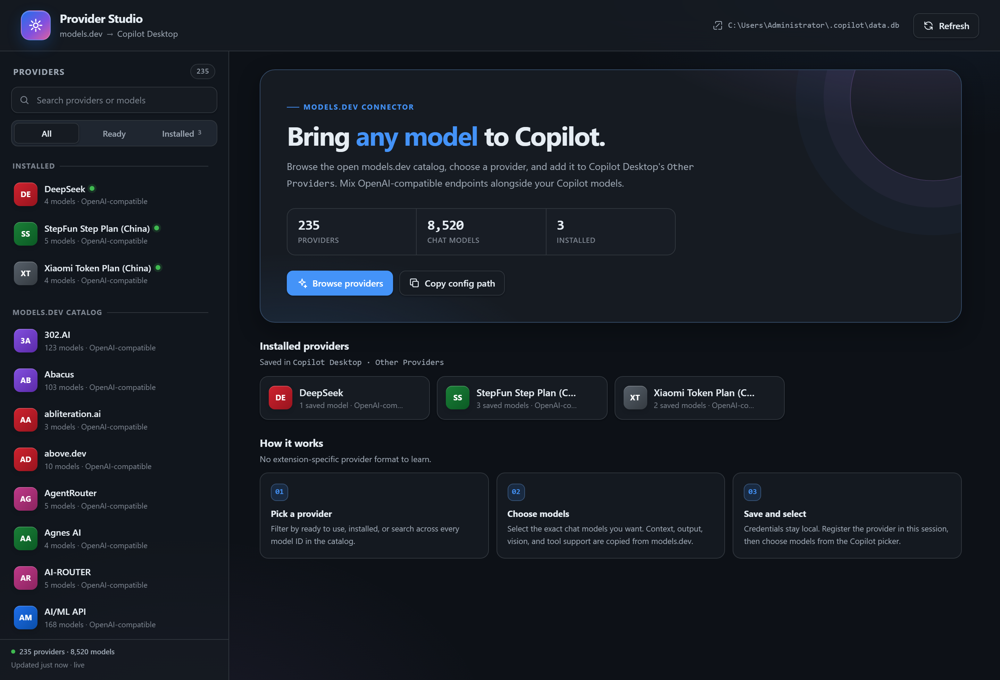
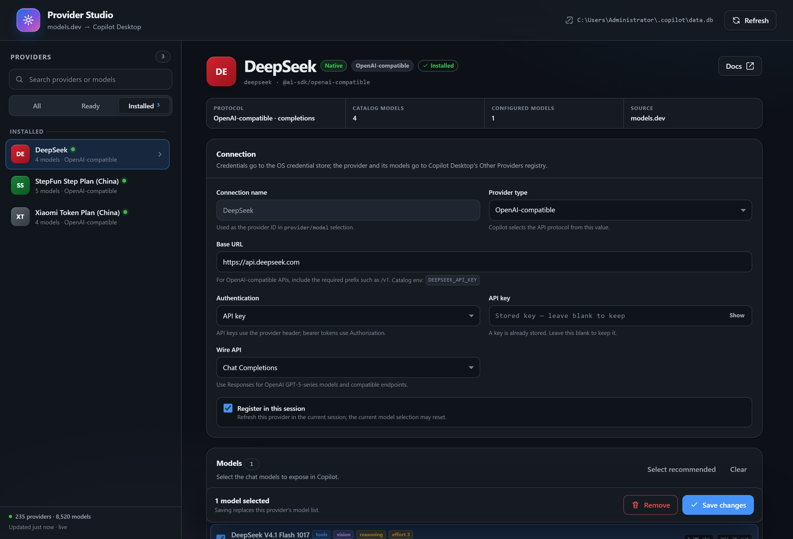
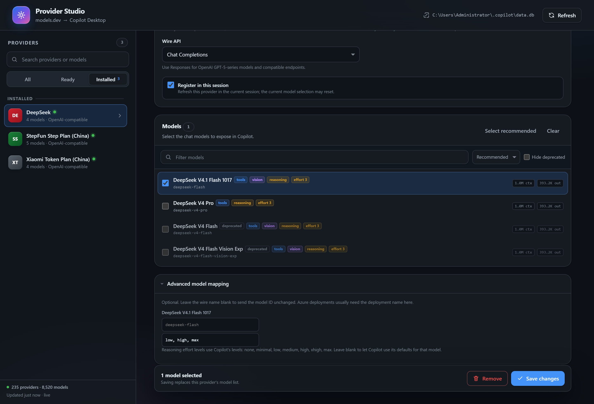

写入真正的注册表
供应商和模型写入 ~/.copilot/data.db 的 model_providers、provider_models，与 Other Providers 设置使用同一处存储。
Copilot Desktop Canvas
浏览 models.dev，选择供应商和聊天模型，直接加入 Copilot Desktop 的 Other Providers。推理强度会自动映射，密钥存入系统凭据管理器。

供应商和模型写入 ~/.copilot/data.db 的 model_providers、provider_models，与 Other Providers 设置使用同一处存储。
数据在 Copilot Desktop 自己的数据库里，新会话立即能看到供应商，不需要改文件或重启应用。
等级写入 supported_reasoning_efforts，这正是 Copilot 显示推理强度选项所依赖的字段。
API Key、Bearer Token 存入系统凭据管理器的 byok:<id>:apiKey，画布接口和 Agent 都拿不到明文。
Token 上限、视觉支持、推理选项都来自 models.dev，同时保留模型名称与身份。
已有的 App 供应商可以在画布中修改或删除，包括模型列表和推理强度。


需要支持 Canvas 的 GitHub Copilot Desktop，以及访问 models.dev 的网络。
git clone https://github.com/wosledon/copilot-desktop-models
cd copilot-desktop-models
npm run install:extension
命令会把扩展复制到 ~/.copilot/extensions/models-dev-providers
（设置了 $COPILOT_HOME 时使用该目录）。然后新建 Copilot 会话，打开
Canvases → Models.dev Providers。
| 数据 | 位置 |
|---|---|
| 供应商与模型 | ~/.copilot/data.db |
| API Key / Bearer Token | 系统凭据管理器：byok:<provider-id>:apiKey |
| models.dev 缓存 | ~/.copilot/plugin-data/models-dev-providers/catalog.json |
| 一次性备份 | ~/.copilot/plugin-data/models-dev-providers/backups/ |